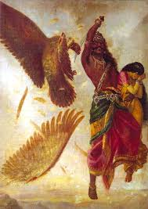

Aranya Kanda includes information about Rama's life in the forest and the abduction of Sita by Ravana.After spending more than ten years,
they settled at Panchavati in the Dandaka forest.Ravana elicited the aid of Maricha who assumed the form of a golden deer and enticed Sita.
Entranced by the beauty of the deer, she pleaded with Rama to get her the deer. Leaving Sita under Lakshmana’s guard, he endlessly chased the deer.
Unable to capture the deer, he shot a fatal arrow at it.
With his last breath,Maricha called out the name of Lakshmana in the voice of Rama.
When Sita heard the cry, she was afraid that his life was in danger.
She insisted that Lakshmana rush to his aid. Lakshmana tried to assure her that Rama was invincible,
and that it was best if he obeyed Rama’s orders to protect her. On the verge of hysterics, Sita insisted that it was not she but her lord who
needed Lakshmana’s help. After drawing a protective circle round the cottage, he stipulated that she was not to go outside the circle.
When Ravana found her alone and unprotected, he appeared in the guise of an ascetic requesting Sita’s hospitality.
Unaware of his devious plan, Mother Sita left the protection of the circle, and was then forcibly carried away by Ravana.
Jatayu, a giant vulture and friend of Rama, tried to rescue Sita, but was mortally wounded. Sita kept her presence of mind,
and dropped her jewels among some monkeys.